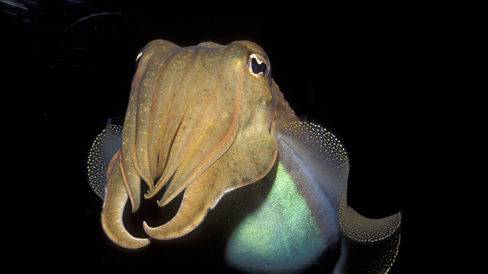
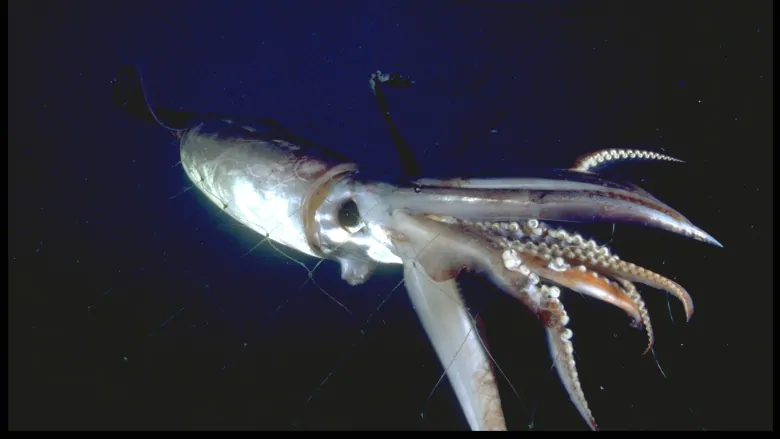
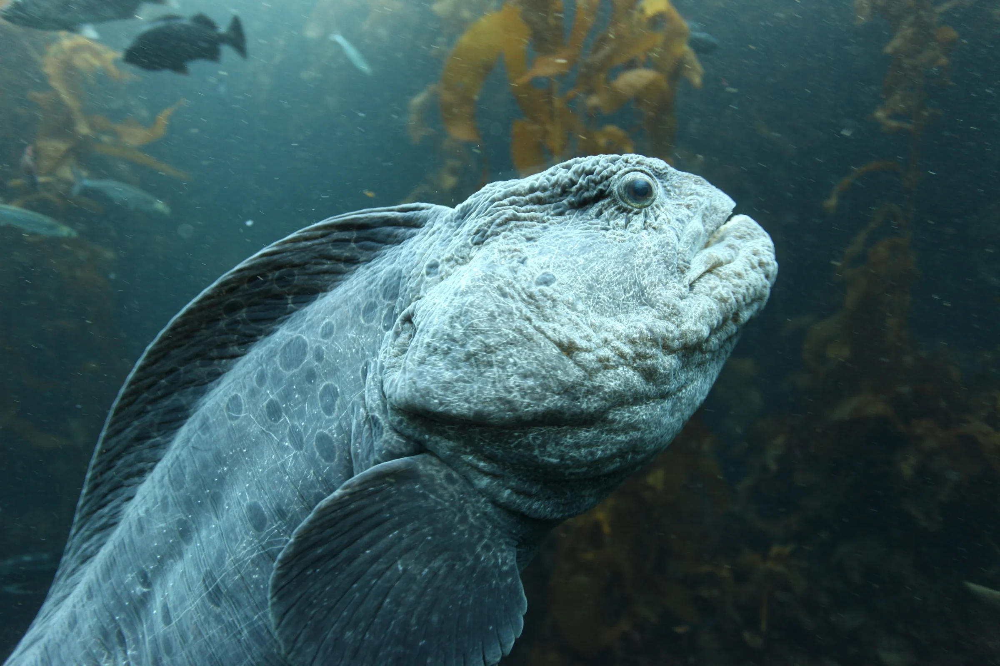
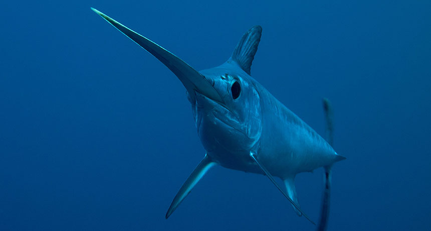
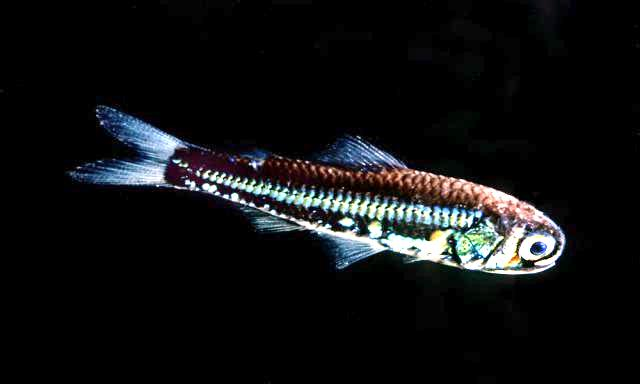
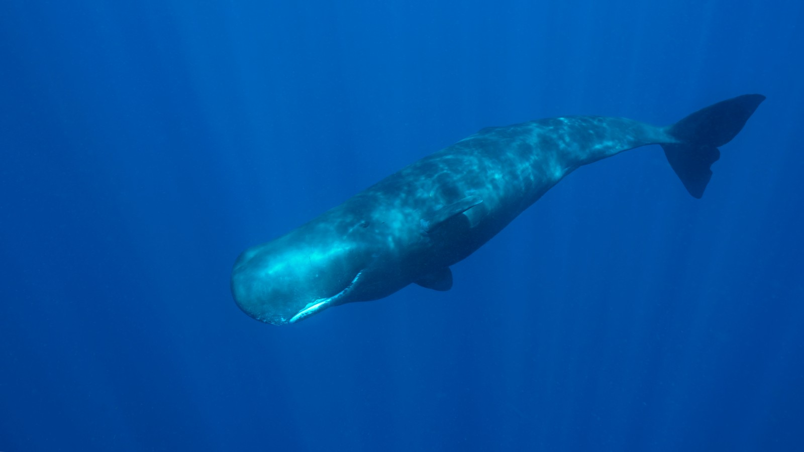

The Mesopelagic Zone
The Twilight Zone
The mesopelagic (middle open ocean) zone stretches from the bottom of the epipelagic down to the point where sunlight cannot reach. Generally speaking the mesopelagic zone streatches from 200m down to the approximately 1000m deep. The mesopelagic zone is much larger than the epipelagic, and the most numerous vertebrates on Earth (small bristlemouth fishes) live in this zone. Many of the species of fishes and invertebrates that live here migrate up into shallower, epipelagic depths to feed, but only under the cover of night.
Marine Life





